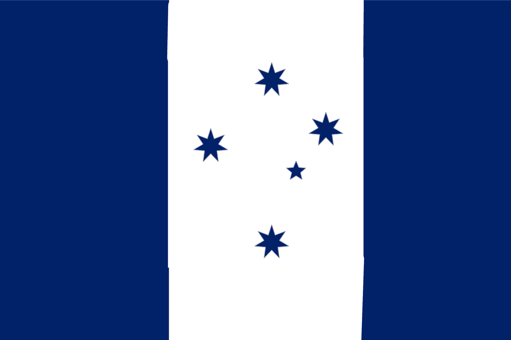
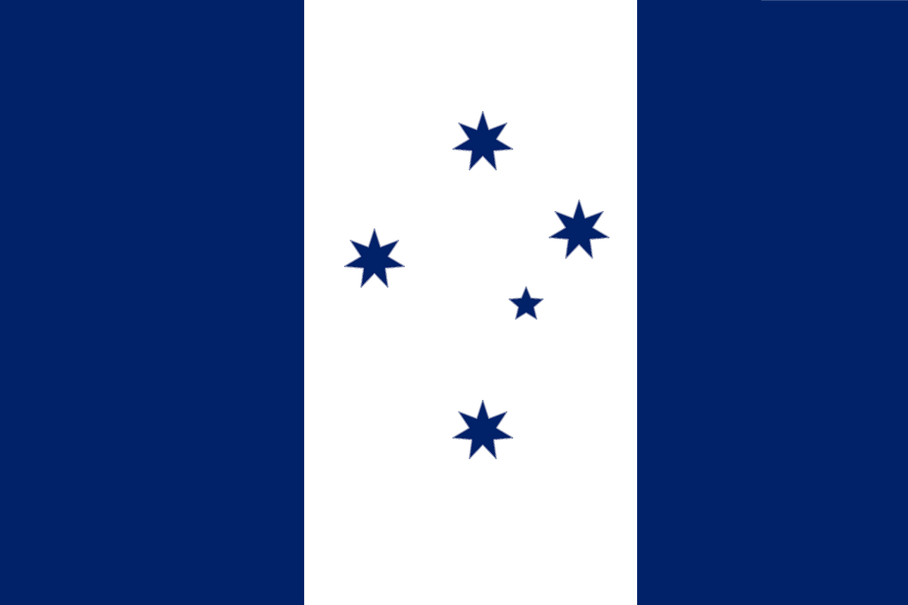
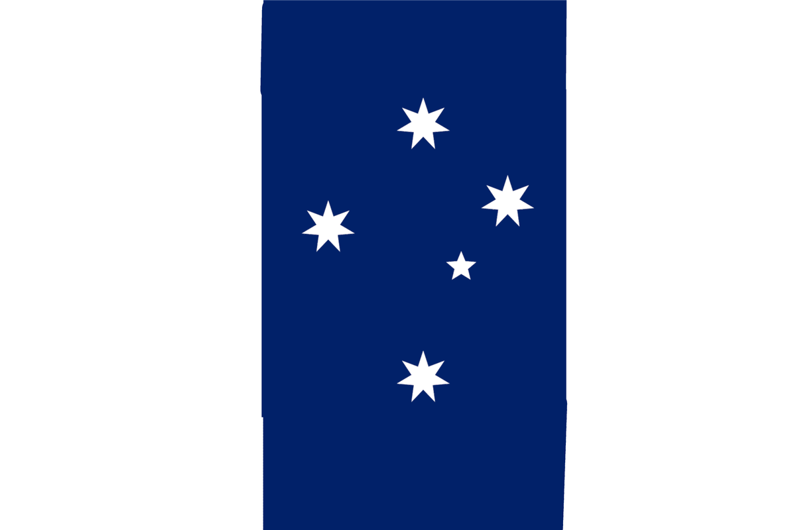

The current australian flag looks kinda bad, so i made 2 more.
Note: the lines aren't straight, so if you want to use them i would recommend fixing them.
This is the flag I like the most:
Here is a newer version of it with straight lines: (2023-10-11)
This is the other flag I made:
